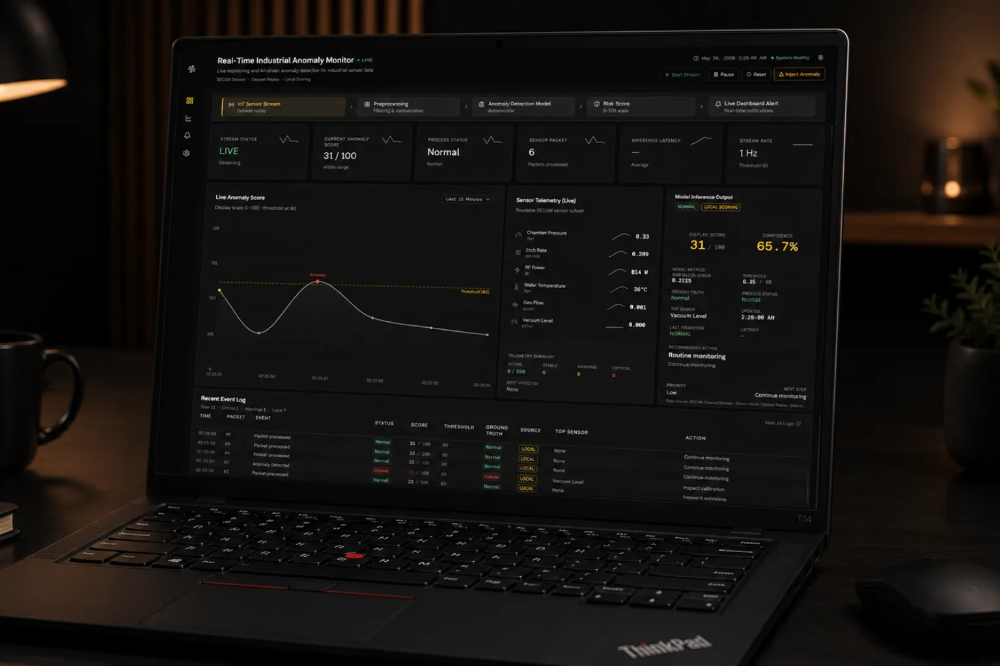
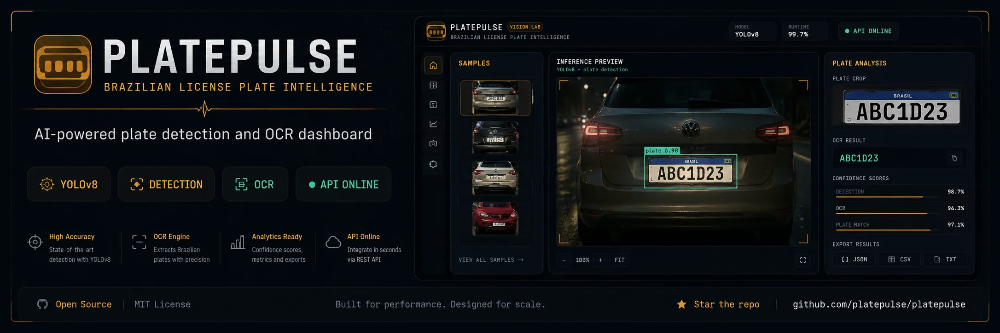
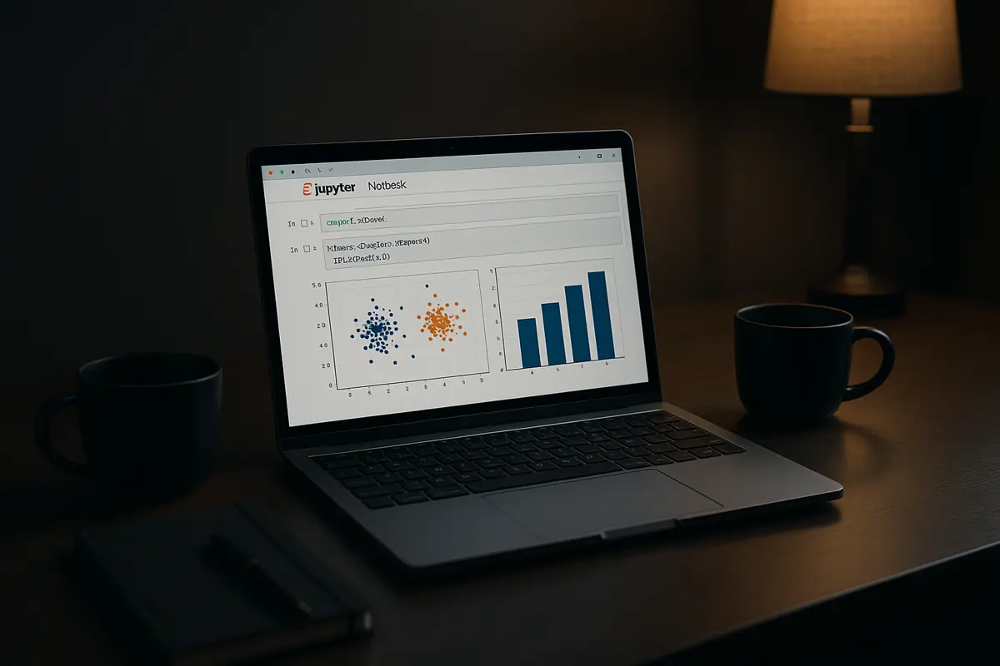
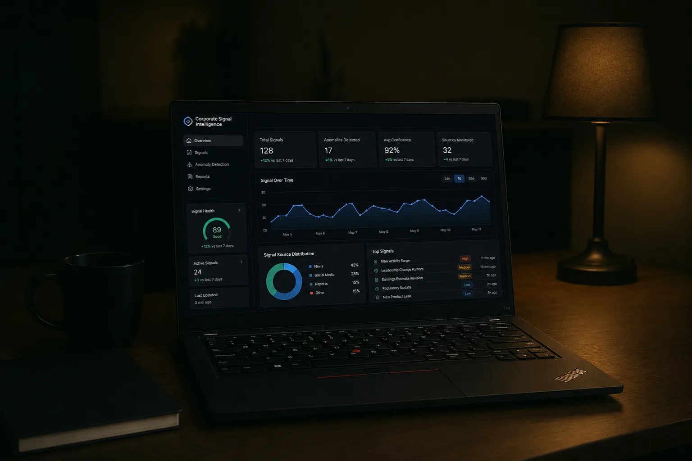
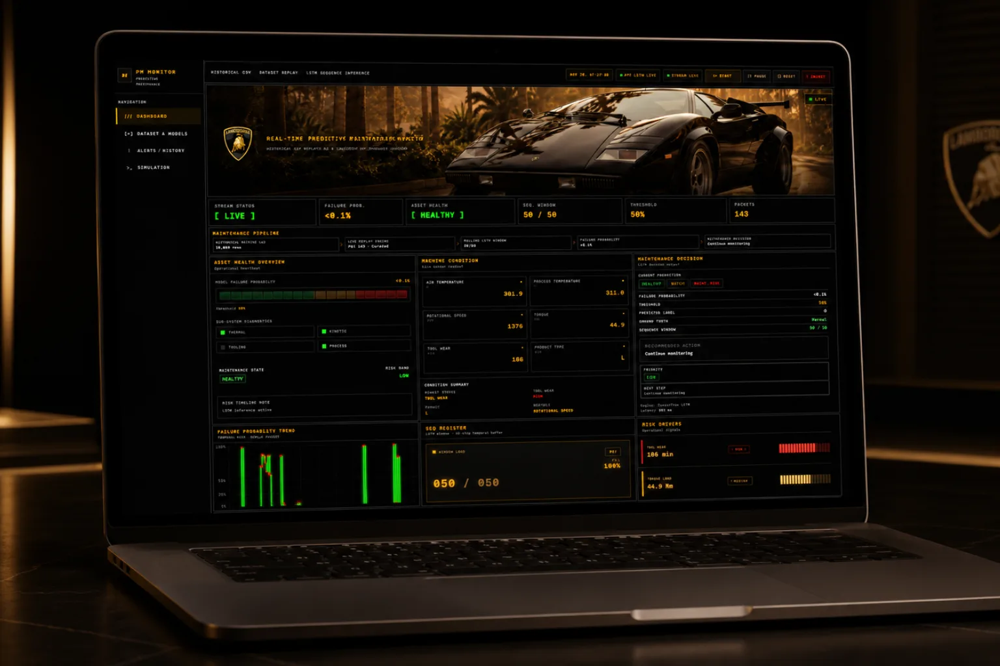
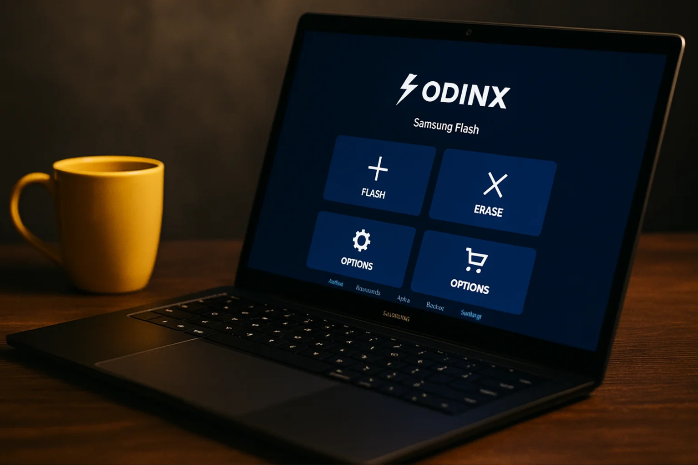
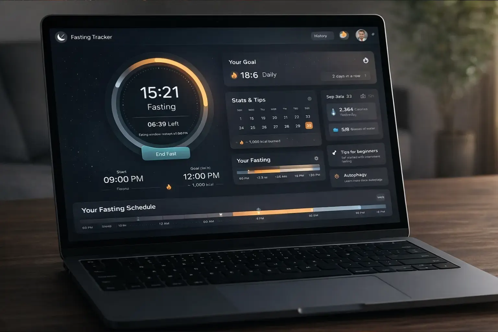

Projetos
Soluções de software e projetos inovadores desenvolvidos em contextos pessoais e profissionais
Visão de Raças Caninas • YOLOv8
Experiência premium de reconhecimento de raças caninas com YOLOv8 e front-end custom em HTML/CSS/JS, permitindo testes com samples, upload e câmera via API FastAPI.

Real-Time Industrial Anomaly Monitor SECOM Manufacturing Monitor
Dashboard industrial em tempo real que reproduz amostras limpas do SECOM como fluxo de sensores, calcula risco de anomalia e visualiza a saúde do processo.

PlatePulse Vehicle Intelligence
AI-powered vehicle plate intelligence dashboard that combines YOLOv8 plate detection, client-side plate cropping, OCR/ALPR reading, confidence metrics, and a premium real-time inference interface.
Classificador de Emoções Faciais • VGG16
Sistema de reconhecimento de emoções faciais em tempo real usando VGG16 com Fine-Tuning. Classifica 7 emoções com 72% de acurácia e interface web profissional interativa.
DocMind — RAG Document QA Assistant AI • RAG • Document Intelligence
Cloud-hosted RAG document assistant with PDF ingestion, semantic retrieval, source-grounded answers and a premium document intelligence workspace.
Gray Matter LABS AI Research Workspace
AI research workspace with a lab-inspired chat interface for scientific papers, web research, Wikipedia lookup, and computational reasoning.
Tradutor de Dados Universal • Open Source
Aplicação desktop minimalista para traduzir datasets (CSV, Excel, SQLite) com foco em produtividade, estabilidade e UX.


Monitoramento Econômico • Dashboards JS
Dashboard profissional horizontal para monitoramento de indicadores econômicos dos países da América do Sul com visualizações interativas e análise de risco de investimento.
API de Avaliação CS2 • Scraping
API para avaliação de inventários de Counter-Strike 2, com scraping de preços, análise de Unidades de Armazenamento e classificação de itens.
RL Portfolio Allocation Dashboard
PPO-based portfolio allocation dashboard with historical market replay, paper-trading simulation, and real-time policy inference.

Corporate Signal Intelligence AI Anomaly Detection Dashboard
Dashboard executiva para monitoramento de empresas públicas, detecção de anomalias em sinais financeiros e geração de AI Briefings a partir de eventos críticos.
CineScope Intelligence Semantic Movie Discovery
A cinematic movie discovery interface that combines semantic recommendations with TMDb metadata, posters, cast, trailers, and ranking logic to help users discover films by mood, theme, title, or story context.

PM Monitor · Real-Time Predictive Maintenance Dashboard
Dashboard de manutenção preditiva em tempo real que reproduz telemetria industrial como fluxo simulado de máquina, executa inferência LSTM e visualiza saúde do ativo, risco e decisões de manutenção.
Visual Anomaly Comparison Lab
Industrial-style anomaly inspection dashboard using a denoising autoencoder to compare original and reconstructed images, generate heatmaps, masks, anomaly scores, and approximate suspicious-region overlays.

Odin4 GUI Linux • Interface Gráfica
Interface gráfica para o compilador Odin 4, facilitando o uso e desenvolvimento de projetos na linguagem Odin no Linux.

Help Me Fast • Fasting Companion
Linux desktop app for prolonged fasting: metabolic timer, pattern-interruption flow, and 100% local data (BYOS). Electron, React, TypeScript.
Help Me Fast (Android) • Fasting Companion
Android app for prolonged fasting: metabolic timer, phase wheel, pattern-interruption flow, and 100% on-device data. Expo, React Native, TypeScript.
Loadout • Steam Item Portfolio
React Native app for CS2 collectors: Steam sign-in, skin inventory, snapshot simulations, and portfolio analytics. FastAPI backend on Render.